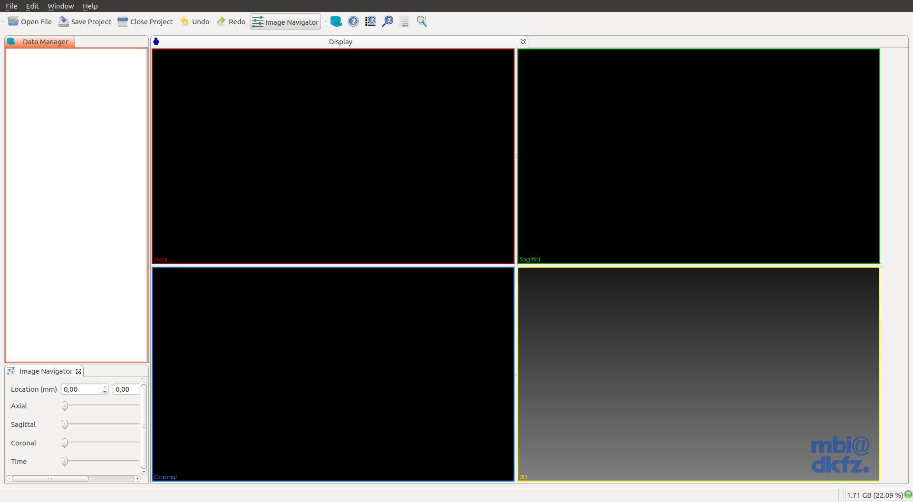
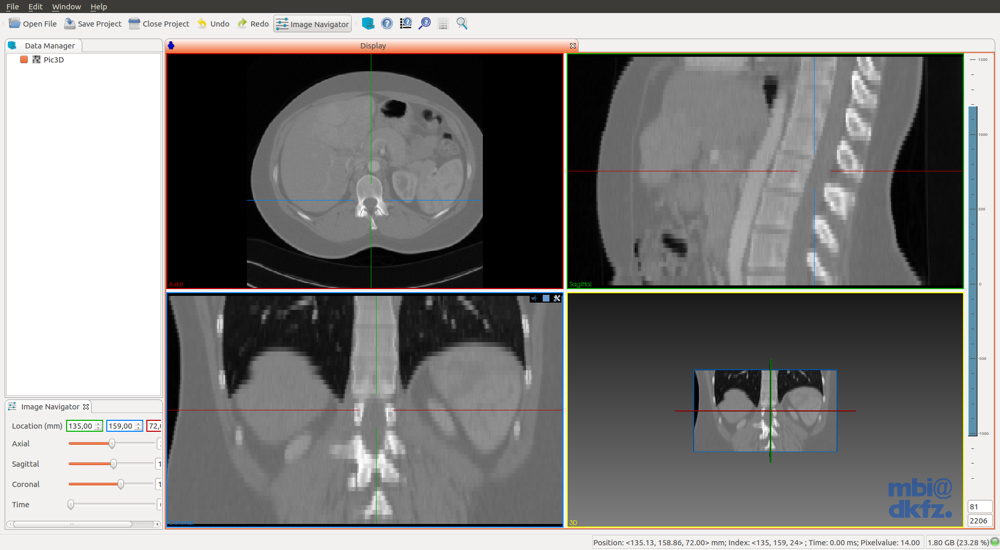

Prerequisites
- GIT
- CMake (version 3.2 or higher. Current stable 3.3)
- Qt 5.x
- Make sure that you select a Qt version which provides the right OpenGL-enabled packages for your architecture and compiler
Building
$ sudo apt-get install qt5-default qtscript5-dev libqt5svg5-dev libqt5webkit5-dev libqt5xmlpatterns5-dev qttools5-dev qttools5-dev-tools libtiff5-dev libwrap0-dev
$ git clone http://git.mitk.org/MITK.git
$ mkdir MITK-build && cd MITK-build
$ cmake ../MITK
$ make -j4
Where *4 is the number of CPU Threads.
The last command will take several minutes to complete.
Testing
$ cd ~/Downloads && wget -c http://mitk.org/download/tutorial-data/Pic3D.nrrd
$ cd /path/to/MITK-build/MITK-build #Yes, It's repeated.
$ ./bin/MitkWorkbench

- Open the downloaded imagen in
~/Downloads
